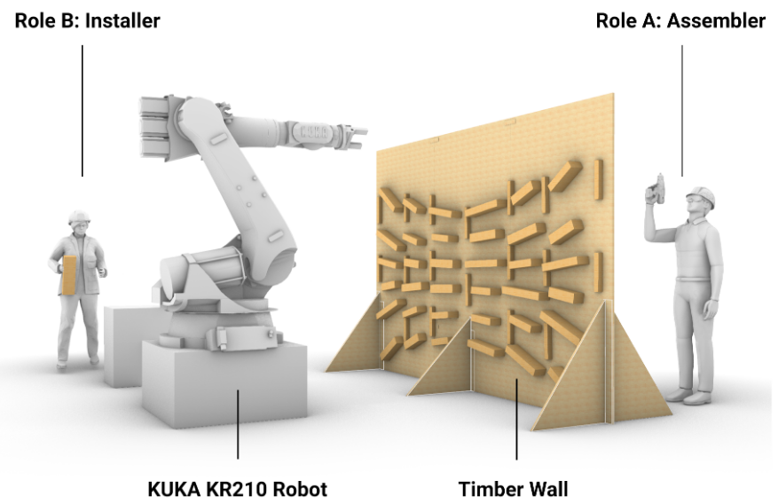

Exploring the Use of Augmented Reality for Multi-human-robot Collaboration with Industry Users in Timber Construction


Venue. CHI-EA (2025)
Materials.
DOI
PDF [link]
Abstract. As robots are introduced into construction environments, situations may arise where construction workers without programming expertise need to interact with robotic operations to ensure smooth and successful task execution. We designed a head-mounted augmented reality (AR) system that allowed control of the robot’s tasks and motions during human-robot collaboration (HRC) in timber assembly tasks. To explore workers’ feedback and attitudes towards HRC with this system, we conducted a user study with 10 carpenters. The workers collaborated in pairs with a heavy-payload industrial robot to construct a 2 x 3 m timber panel. The study contributes an evaluation of multi-human-robot collaboration along with qualitative feedback from the workers. Exploratory data analysis revealed the influence of asymmetrical user roles in multi-user collaborative construction, providing research directions for future work.
Link to this page: